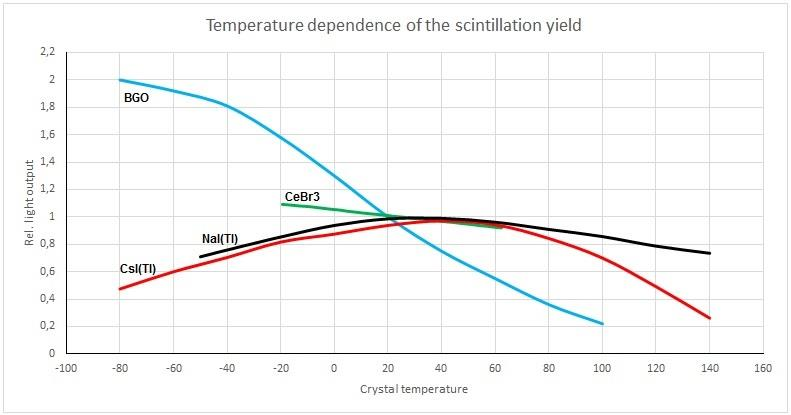
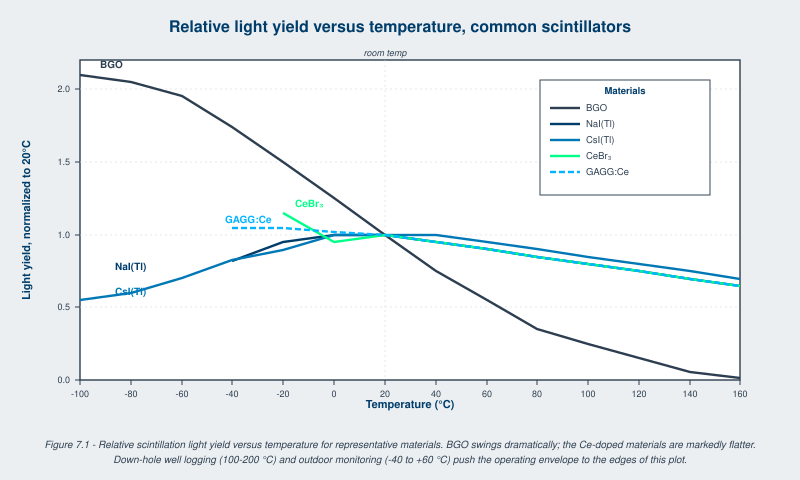

The light output of a scintillator depends on temperature. The photodetector's gain and dark noise also depend on temperature. The combination determines the temperature behavior of the complete detector and is what an applications engineer has to predict before deploying a detector to a well-logging tool, an outdoor monitoring station, or a lunar surface experiment.
Scintillation is a competition. Energy deposited by ionization populates excited states in the scintillator. Those excited states can either emit a photon (radiative transition) or relax non-radiatively (heat). The branching ratio depends on the population of intermediate states, the energy gaps between them, and the rates of the competing processes. All of these have temperature dependence.
In doped scintillators (NaI(Tl), CsI(Tl), LaBr3:Ce, GAGG:Ce), the activator ion sites are the radiative emitters. The energy deposited migrates from the host lattice to the activator through a transport process that involves trapping and detrapping at lattice defects. Above some characteristic temperature, thermal quenching of the radiative transition dominates, and the light yield falls. Below some temperature, the migration to the activator becomes inefficient and light yield also falls. The result is a maximum in light yield at some intermediate temperature, often near room temperature for well-developed materials.
In undoped scintillators where the host emits directly (BGO, BaF2, undoped CsI), the temperature dependence reflects the rate of thermal population of non-radiative pathways. BGO light yield rises monotonically as temperature falls; BaF2 fast component is largely temperature-independent.
The reference data, expressed as light yield relative to its room-temperature value, drawn from manufacturer specifications and the SCINT/IEEE NSS literature [1][2]:

Table 7.1 - Relative light yield versus temperature for selected scintillators
| T (deg C) | BGO | CeBr3 | NaI(Tl) | CsI(Tl) | LaBr3:Ce | GAGG:Ce | LYSO:Ce |
|---|---|---|---|---|---|---|---|
| -100 | 2.10 | n/a | n/a | 0.55 | n/a | n/a | n/a |
| -80 | 2.05 | n/a | n/a | 0.60 | n/a | n/a | n/a |
| -60 | 1.95 | n/a | n/a | 0.70 | n/a | n/a | n/a |
| -40 | 1.75 | n/a | 0.80 | 0.80 | 0.95 | 1.05 | 1.05 |
| -20 | 1.50 | 1.15 | 0.90 | 0.90 | 1.00 | 1.05 | 1.05 |
| 0 | 1.25 | 1.10 | 1.00 | 1.00 | 1.00 | 1.02 | 1.02 |
| 20 | 1.00 | 1.00 | 1.00 | 1.00 | 1.00 | 1.00 | 1.00 |
| 40 | 0.75 | 0.95 | 0.95 | 1.00 | 0.95 | 0.95 | 0.95 |
| 60 | 0.55 | 0.90 | 0.90 | 0.95 | 0.90 | 0.90 | 0.90 |
| 80 | 0.40 | 0.85 | 0.85 | 0.90 | 0.85 | 0.85 | 0.85 |
| 100 | 0.25 | 0.80 | 0.80 | 0.85 | 0.80 | 0.80 | 0.80 |
| 120 | 0.15 | 0.75 | 0.75 | 0.80 | 0.75 | 0.75 | 0.75 |
| 140 | 0.05 | 0.70 | 0.70 | 0.75 | 0.70 | 0.70 | 0.70 |
| 160 | 0.00 | 0.65 | 0.65 | 0.70 | 0.65 | 0.65 | 0.65 |
Patterns:
The decay time also depends on temperature. CsI(Tl) decay slows substantially below 0 C (the slow component fraction grows). NaI(Tl) decay accelerates slightly with cooling. For high-rate or fast-timing applications the decay-time temperature dependence may matter as much as the light-yield dependence.

PMT gain depends on temperature primarily through the secondary-electron-emission yield at the dynodes, which has weak temperature dependence (typically less than 0.5 percent per degree Celsius). PMTs also exhibit hysteresis after large gain changes that persists for hours, complicating any in-service correction.
SiPM gain depends on temperature dramatically. The breakdown voltage shifts by about 25 to 50 millivolts per degree Celsius in modern devices, and gain at fixed bias voltage shifts by 1 to 2 percent per degree Celsius. The dark count rate doubles approximately every 10 degrees Celsius. SiPM-based detectors must include either active bias compensation (adjust the bias voltage to track temperature) or downstream gain correction (calibrate the gain offline as a function of temperature and apply the correction in firmware). Modern SiPM front-end ASICs include both options.
Photodiodes have small temperature dependencies and are mostly limited by their leakage-current contribution to the total noise floor, which doubles approximately every 10 degrees Celsius like the SiPM dark count rate.
Three strategies are used to make temperature-dependent detectors deliver stable output.
Hardware temperature stabilization. The detector housing includes a thermistor and a heater (or thermoelectric cooler), and the system holds the crystal and photodetector at a fixed temperature during operation. This is standard for laboratory instruments and for the most demanding measurements but adds power consumption, weight, and warm-up time. Not practical for handhelds and portable instruments.
Real-time bias adjustment. For SiPMs, a closed-loop bias supply tracks the temperature reading from a thermistor on the detector head and adjusts bias to hold gain constant. Modern integrated circuits do this with sub-millivolt accuracy and microsecond response. The result is gain stability comparable to a PMT over the full operating temperature range.
Firmware gain correction. A temperature reading is recorded with each measurement, and a stored calibration table converts each pulse height to its room-temperature equivalent before histogramming. The simplest implementation is a one-dimensional lookup; more sophisticated implementations track multiple parameters (gain, peak position, resolution) and apply event-by-event correction. This is the dominant approach in modern handheld instruments because it requires no extra hardware on the detector head.
Spectrum-domain stabilization. The detector tracks a known spectral feature (an internal Am-241 alpha pulser, an LED reference flash, or a natural background line such as K-40 at 1460 keV or Tl-208 at 2614 keV) and adjusts gain to hold the feature at a fixed channel. This compensates for any source of drift, not only temperature, and is the standard solution for fielded outdoor monitoring stations.
Several application classes push detectors to temperature extremes.
Down-hole well logging. Tools operate at 100 to 200 degrees Celsius for hours at a time. Scintillator choice is constrained to materials that retain useful light yield at these temperatures: CsI(Na) (good to about 175 C), CsI(Tl) with corrections, LaBr3:Ce, GAGG:Ce. NaI(Tl) is marginal above 130 C. PMTs in this environment use specially designed high-temperature dynode chains. Modern logging tools increasingly use SiPMs with active cooling and bias compensation.
Outdoor environmental monitoring. Stations operate from -40 C in winter to +60 C in summer in continental climates. Both scintillator and photodetector exhibit substantial drift over this range; the standard solution is a Peltier-cooled detector head plus firmware spectrum stabilization on a natural background line. Detector reliability over 10 to 20 year deployments depends on minimizing thermal cycling stress on the optical coupling.
Space. Operating temperatures span -150 to +150 degrees Celsius depending on the mission and the satellite's solar exposure. Scintillator choice is constrained to materials that survive thermal cycling without optical-coupling failure. CsI(Tl) coupled to a SiPM array, with the entire detector head in a temperature-controlled enclosure, is the modern default for space applications.
Cryogenic dark matter and rare-event physics. Operating temperatures below 100 millikelvin push some scintillators (CaWO4 at 10 mK in CRESST, NaI at 5 mK in proposed experiments) into a regime where the photodetector is replaced by a phonon-based readout or a transition-edge sensor. Light yield typically rises with cooling for materials in this regime, recovering some of the photon statistics lost to temperature-related quenching at room temperature.
Going Deeper - The Mott-Seitz model of thermal quenching
The temperature dependence of luminescent efficiency in many scintillators follows the Mott-Seitz form:
eta(T) = 1 / (1 + C * exp(-E_a / kT))
where C is a dimensionless prefactor and E_a is the activation energy for non-radiative quenching. Below the activation temperature (where kT << E_a), efficiency approaches unity. Above it, efficiency falls exponentially. Fitting measured light-yield-vs-temperature curves to the Mott-Seitz form gives an activation energy that characterizes the quenching mechanism. For NaI(Tl), the activation energy is around 60 meV. For BGO, around 200 meV. For most Ce-doped materials, well above 100 meV, which is why their temperature dependence is mild over normal operating ranges. SCINT and IEEE NSS papers report Mott-Seitz fits routinely for new materials; the activation energy is one of the published parameters that lets an applications engineer predict detector performance at non-room-temperature operating conditions.
BNC in Practice - The temperature characterization run
Before any deployment outside controlled laboratory temperatures, run a characterization sweep. Place the detector in a thermal chamber. Step through the expected operating range, top to bottom and back up, with at least an hour at each temperature for thermal equilibrium. Record the pulse height of a fixed reference line (Cs-137 at 662 keV is the standard) at each step. The resulting curve is the gain-versus-temperature lookup that goes into firmware. Skipping this step in favor of theoretical prediction has produced enough field surprises that any deployment plan that omits it should raise an eyebrow during review.
Through the 1990s and 2000s, temperature compensation was an extra feature that some instruments had and some did not. The instruments that lacked it accepted gain drift as an operating fact and recalibrated frequently. The shift came from two directions at once. SiPM-based detectors raised the stakes because their gain temperature coefficient is larger than a PMT's, which made compensation a requirement rather than an option. At the same time, low-power microcontrollers reached a price point where embedding a real-time gain correction loop in any handheld instrument cost almost nothing. By 2026, a fielded instrument without temperature compensation is a legacy product, not a current design. The engineering question shifted from whether to compensate to which compensation strategy fits the application.
Take it interactively. The quiz lives on its own page. Pick one answer per question, then check your score. Auto-scored, and your answers are saved on this device. About 10 minutes.
Or read the questions and answers inline below (preserved for print and offline use).
[1] T. Yanagida, "Inorganic scintillating materials and scintillation detectors," Proc. Jpn. Acad. Ser. B, vol. 94, pp. 75-97, 2018.
[2] M. Moszynski et al., "Temperature dependences of LaBr3(Ce), LaCl3(Ce) and NaI(Tl) scintillators," Nucl. Instrum. Methods A, vol. 568, pp. 73